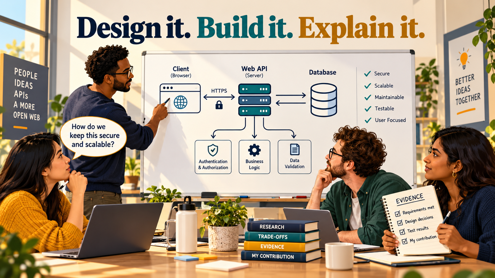
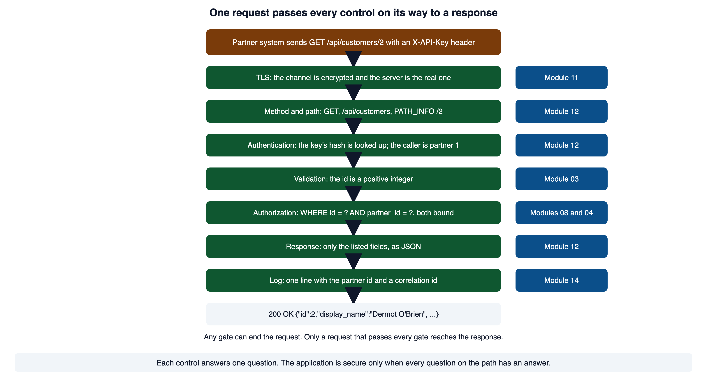
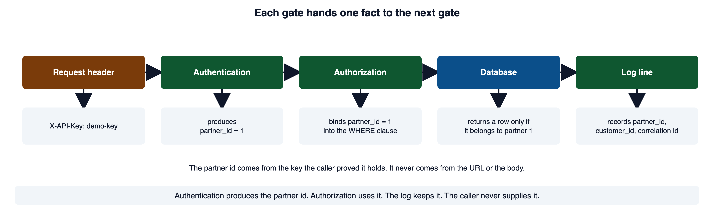
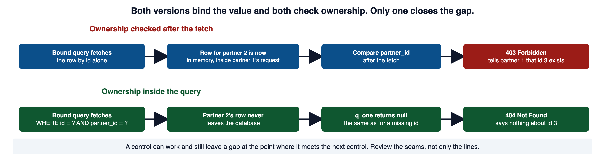
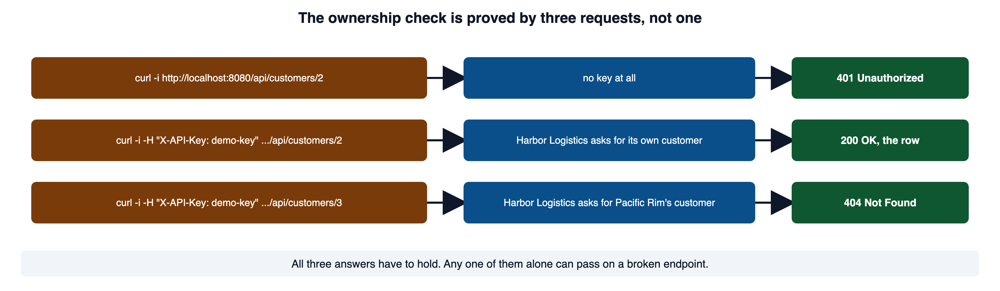
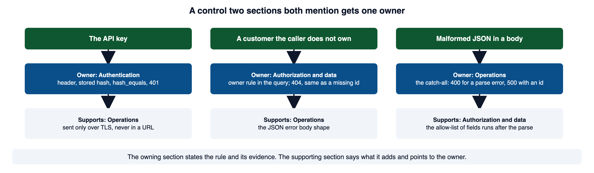
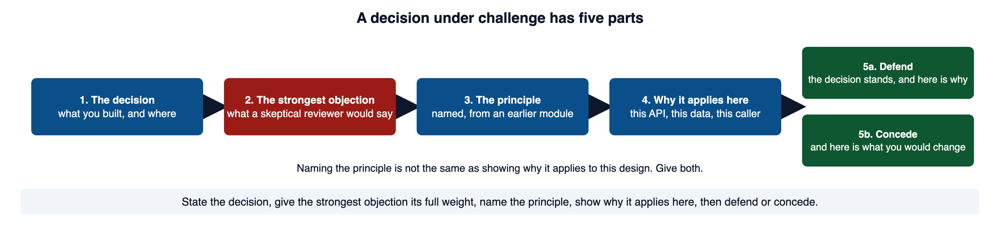

Your team has a written API design, and each member has an implementation. The final review asks where each safeguard is enforced, whether shared decisions agree, and which actual tests support the result. A polished diagram alone cannot answer those questions.

Open full-size image (opens in a new tab)Read this page with your portal running and your team's design document open. Red code blocks show a shape to recognize and never ship. Green code blocks show the pattern to copy.
1Required reading
These two are required reading for the module. This page teaches everything the assignment and the quiz need; the readings give the same material in the industry's own words, which is what a design review, an audit, or a partner's security questionnaire will use.
- OWASP Top 10:2025. The ten risk categories, as one list. The design project answers most of them at once, so start from the whole list rather than one entry.
- OWASP Secure Product Design Cheat Sheet. The principles a product team designs with, among them least privilege and defense in depth, and the idea that security design is continuous and happens close to where the code is written.
2One request, through every control
A running application does one thing over and over. It receives a request from a client it does not control and decides how to answer it. Every module in this course was one decision on that path.
Take one request from the partner API your team is building. Harbor Logistics, partner 1 in data/seed.sql, holds the development key demo-key. Its system asks for one of its own customers:
GET /api/customers/2 HTTP/1.1
Host: localhost:8080
X-API-Key: demo-keyHere is what has to happen before the row comes back, with the module that taught each step.
| Stage | The question it answers | Where it was taught | The weakness when it is missing |
|---|---|---|---|
| Transport | Is the channel private, and is this the real server? | Module 11, sections 2 and 9 | cleartext transmission (CWE-319) |
| Method and path | What is being asked, and of which resource? | Module 12, section 4 | |
| Authentication | Who is calling? | Module 12, section 7 | improper authentication (CWE-287) |
| Validation | Is the id a value this endpoint accepts? | Module 03, section 3 | improper input validation (CWE-20) |
| Authorization | May this caller see this row? | Module 08, section 5 | authorization bypass through a user-controlled key (CWE-639) |
| The query | Does the value reach the database as data? | Module 04, section 6 | SQL injection (CWE-89) |
| The response | Does only what the design listed leave the server? | Module 12, section 11 | |
| Failure | Does a failure tell the caller nothing and the log everything? | Module 14, section 4 | error message containing sensitive information (CWE-209) |
| The record | Is there a line an on-call engineer can act on? | Module 14, section 5 | insufficient logging (CWE-778) |
Two modules do not sit at one stage. Module 07 gave you the evidence discipline that runs across all of them. Module 02 gave you the threat model, which is how the stages were chosen in the first place.

Open full-size image (opens in a new tab)The OWASP Top 10 Proactive Controls organize the same path by control rather than by failure: C1 is access control, C2 cryptography, C3 input validation and exception handling, C7 digital identities, C9 logging and monitoring, C10 server-side request forgery. Each row of the table above is one of them.
3How the controls compose
The new idea in this module is not any one control. It is how they fit together in one handler, in one order, each handing a fact to the next.
Here is the endpoint that answers the request in section 2. It is built on the portal's helpers, and each gate names the module that taught it.
<?php
// WHY: The string comparison avoids numeric-string coercion in the secret check.
// GET /api/customers/<id>: one customer, for the partner whose key signed the request.
require __DIR__ . '/../db.php';
require __DIR__ . '/../lib/query.php';
header('Content-Type: application/json');
$correlationId = bin2hex(random_bytes(8));
try {
// Gate 1. The method. Anything but GET is refused before any work is done.
if ($_SERVER['REQUEST_METHOD'] !== 'GET') {
http_response_code(405);
header('Allow: GET');
echo json_encode(['error' => 'method_not_allowed']);
exit;
}
// Gate 2. Authentication (Module 12 section 7): who is calling?
$key = $_SERVER['HTTP_X_API_KEY'] ?? '';
$hash = hash('sha256', $key);
$client = $key === '' ? null : q_one(
'SELECT partner_id, key_hash FROM api_clients WHERE key_hash = ? AND disabled = 0',
[$hash]
);
if ($client === null || !hash_equals($client['key_hash'], $hash)) {
http_response_code(401);
echo json_encode(['error' => 'unauthorized']);
exit;
}
$partnerId = (int) $client['partner_id']; // the fact this gate hands forward
// Gate 3. Validation (Module 03 section 3): is the id a positive integer?
$id = filter_var(
ltrim($_SERVER['PATH_INFO'] ?? '', '/'),
FILTER_VALIDATE_INT,
['options' => ['min_range' => 1]]
);
if ($id === false) {
http_response_code(400);
echo json_encode(['error' => 'invalid_id']);
exit;
}
// Gate 4. Authorization (Module 08 section 5): the owner rule is inside the query,
// and the value travels as a bound parameter (Module 04 section 6).
$row = q_one(
'SELECT id, display_name, city, account_status
FROM customers WHERE id = ? AND partner_id = ?',
[$id, $partnerId]
);
if ($row === null) {
error_log(json_encode([
'event' => 'customer_read_denied', 'partner_id' => $partnerId,
'customer_id' => $id, 'correlation_id' => $correlationId,
]));
http_response_code(404);
echo json_encode(['error' => 'not_found']);
exit;
}
// Gate 5. The response: only the fields the design listed. tax_id never leaves.
echo json_encode($row);
} catch (Throwable $e) {
// Gate 6. Operations (Module 14 section 4): detail to the log, a short message out.
error_log(json_encode([
'event' => 'api_error', 'correlation_id' => $correlationId,
'class' => get_class($e), 'message' => $e->getMessage(),
]));
http_response_code(500);
echo json_encode(['error' => 'server_error', 'correlation_id' => $correlationId]);
}Secure. Why: The string comparison avoids numeric-string coercion in the secret check.
curl -i -H "X-API-Key: demo-key" http://localhost:8080/api/customers/2HTTP/1.1 200 OK
Host: localhost:8080
Date: Thu, 08 Oct 2026 16:35:22 GMT
Connection: close
X-Powered-By: PHP/8.5.8
Content-Type: application/json
{"id":2,"display_name":"Dermot O'Brien","city":"Costa Mesa","account_status":"active"}The order is deliberate. Each gate is cheaper than the one after it, so a bad request is turned away before it costs anything. And each gate produces one fact that the next gate uses. Authentication produces $partnerId. Authorization binds it into the WHERE clause. The log line records it.

Open full-size image (opens in a new tab)The try wraps the whole handler so that no gate can forget the safe-error path, and it catches Throwable because PHP's Error types, which hostile input provokes, are not Exceptions. The correlation id is generated before anything else, so every log line in this request can carry it.
PHP Manual: Throwable confirms that Throwable is the base interface for anything a throw can raise, including both Error and Exception. PHP Manual: hash documents hash('sha256', ...) and its lowercase hexadecimal return value, which is the form stored in api_clients.key_hash. W3Schools: PHP Exceptions has a live editor for try, catch, and finally. The OWASP Logging Cheat Sheet lists authorization failures and access to sensitive data among the events to always log, which is why the denied read writes a line.
4The seams between controls
The defects that survive a careful codebase are usually between two controls, not inside either. Each control works. The gap is at the point where one hands off to the next.
Here is the same endpoint with one change. The ownership rule runs after the fetch instead of inside it.
<?php
// WHY: Building structured output from unchecked text can change the output structure.
// The row is fetched by id alone, then the owner is compared.
$row = q_one(
'SELECT id, display_name, city, account_status, partner_id
FROM customers WHERE id = ?',
[$id]
);
if ($row === null) {
http_response_code(404);
echo json_encode(['error' => 'not_found']);
exit;
}
if ((int) $row['partner_id'] !== $partnerId) {
http_response_code(403);
echo json_encode(['error' => 'forbidden']);
exit;
}Vulnerable. Why: Building structured output from unchecked text can change the output structure.
Partner 1 asks for customer 3, which belongs to Pacific Rim Dental Group, partner 2:
curl -i -H "X-API-Key: demo-key" http://localhost:8080/api/customers/3HTTP/1.1 403 Forbidden
Host: localhost:8080
Date: Thu, 08 Oct 2026 16:37:34 GMT
Connection: close
X-Powered-By: PHP/8.5.8
Content-Type: application/json
{"error":"forbidden"}The row did not leak. The query is bound. The check ran. And partner 1 has learned two things it was never meant to learn: customer 3 exists, and it belongs to someone else. A request for id 99 answers 404, so the two answers together let a partner count every other partner's customers by walking the ids. The gap is in the seam between the query and the check.

Open full-size image (opens in a new tab)The repair is the version in section 3: the owner rule inside the WHERE clause, so q_one returns null for a row the caller does not own, the same as for a row that does not exist.
curl -i -H "X-API-Key: demo-key" http://localhost:8080/api/customers/3HTTP/1.1 404 Not Found
Host: localhost:8080
Date: Thu, 08 Oct 2026 16:35:22 GMT
Connection: close
X-Powered-By: PHP/8.5.8
Content-Type: application/json
{"error":"not_found"}Missing authorization (CWE-862) is the name for a check that is absent. This one was present and still left a gap. The seams below are the ones a partner API has. Each pairs a control that works with a question it was never about.
| Control that works | Question it does not answer | Where the answer lives |
|---|---|---|
| A bound query | Which rows may this caller see? | the owner rule in the query, Module 08 section 5 |
| A valid API key | Which objects may this program touch? | the per-object check, Module 12 section 9 |
A valid scope on a token, such as customers:read | Which customers? | the same per-object check; a scope grants a class of action, Module 12 section 8 |
| A CORS policy | Is this caller allowed in? | nothing; CORS is a browser rule about reading a response, Module 12 section 12 |
| TLS on the channel | Is the key safe at rest? | the stored hash and the .env file, Module 12 section 7 and Module 10 section 12 |
| A rate limit keyed to the partner | Can a stolen key lock the real partner out? | the key choice: per client, per source, Module 12 section 13 |
| No cookie, so no CSRF | Does that hold if the dashboard later signs in with a cookie? | no; Module 06 section 3 says a cookie anywhere in the flow brings the exposure back |
The OWASP API Security Top 10: API1 Broken Object Level Authorization is the API name for the first row, and its prevention list ends with the step this section leads to: write tests for the authorization mechanism and do not deploy changes that make them fail. CWE-862: Missing Authorization is the formal entry for an absent check.
5Primary and supporting controls
Defense in depth is not a count of controls. It is the observation that different controls fail in different ways, so controls that cover different failures leave fewer gaps than one control hardened further. Module 02 section 8 named the principle. This section is about how to write it down without fooling yourself.
The design document asks for exactly this split. Where two sections touch the same control, it asks which measure is authoritative and which is defense in depth. "Authoritative" is the primary control. "Defense in depth" is a supporting one.
The OWASP Insecure Direct Object Reference Prevention Cheat Sheet draws the same line: implement access control checks for each object, and replace enumerable ids with random ones only as "an additional defense-in-depth measure," because "even with complex identifiers, access control checks are essential." It also says, for a resource whose existence is sensitive, to map the missing case and the forbidden case to the same response, such as 404.
6A safeguard someone else can build
A design is useful when a person who was not in the room can build it, and a third person can check it. That is the standard the rubric's second criterion grades. It is easier to hit when every safeguard is written the same way.
The difference shows in the wording.
Weak. Authenticate partners with API keys and keep the API secure.
Strong. Each partner system sends its key in the X-API-Key header, never in the URL. api_clients stores only the SHA-256 of the key. Every endpoint looks the client up by that hash and compares with hash_equals, before any other work. A request with no key or an unknown key returns 401 with the body {"error":"unauthorized"}. This prevents a partner, or anyone who reads the table, from acting as another partner. Verified by three requests: no key, a wrong key, and the development key, which return 401, 401, and 200.
Each part answers a question a reviewer will ask. The control says what. The point says where, by file and line of reasoning, so two members cannot each assume the other built it. The threat says why, and ties the safeguard to an actor in the threat model. The verification says how anyone will know, and it is what section 7 collects into the verification plan.
Different questions need different sources, and reaching for the wrong one is a common way a safeguard loses authority.
| The question | The source |
|---|---|
| Which risk class is this, in words a partner's auditor uses? | OWASP Top 10 |
| How is this control implemented for this root cause? | the OWASP Cheat Sheet for that control |
| How is the requirement phrased so a tester can verify it? | OWASP ASVS |
| What exactly does this PHP function return? | the PHP Manual |
Naming a safeguard "A01" classifies it. The safeguard still has to cite the specific guidance for the specific control, and the exact behavior of the function it relies on.
The OWASP Application Security Verification Standard describes itself as "a list of requirements for secure development," each with a numbered identifier, which is the shape a verifiable requirement takes. The OWASP Cheat Sheet Series is the index of implementation guidance by control. The PHP Manual is the authority for what a function does; OWASP guidance describes controls, not language specifics.
7The verification plan
The verification plan is the fourth part of every safeguard, gathered in one place. For each safeguard it gives the hand-typed curl request that shows the control working and the result it should return. The rubric's evidence table lists the pairs the required core needs. Each request below was typed at a portal copy, and each response is what that copy answered.
A request with no key returns 401.
curl -i http://localhost:8080/api/customers/2HTTP/1.1 401 Unauthorized
Host: localhost:8080
Date: Thu, 08 Oct 2026 16:35:22 GMT
Connection: close
X-Powered-By: PHP/8.5.8
Content-Type: application/json
{"error":"unauthorized"}A request with a wrong key returns the same 401, with the same body, so a caller cannot tell an unknown key from a missing one.
curl -i -H "X-API-Key: wrong-key" http://localhost:8080/api/customers/2HTTP/1.1 401 Unauthorized
Host: localhost:8080
Date: Thu, 08 Oct 2026 16:35:22 GMT
Connection: close
X-Powered-By: PHP/8.5.8
Content-Type: application/json
{"error":"unauthorized"}The owner gets the row (section 3 shows the 200), and a non-owner gets 404 (section 4 shows it). The ownership check needs all three. The owner's 200 alone passes on an endpoint with no check. The non-owner's 404 alone passes on an endpoint that refuses everyone.

Open full-size image (opens in a new tab)A malformed id returns 400. The same request with no id at all returns the same 400.
curl -i -H "X-API-Key: demo-key" http://localhost:8080/api/customers/abcHTTP/1.1 400 Bad Request
Host: localhost:8080
Date: Thu, 08 Oct 2026 16:35:22 GMT
Connection: close
X-Powered-By: PHP/8.5.8
Content-Type: application/json
{"error":"invalid_id"}A forced failure returns a short message with a correlation id and nothing else. To force one for the evidence, make the database unreadable for one request (chmod 000 data/portal.sqlite, then put it back with chmod 644).
curl -i -H "X-API-Key: demo-key" http://localhost:8080/api/customers/2HTTP/1.1 500 Internal Server Error
Host: localhost:8080
Date: Thu, 08 Oct 2026 16:35:22 GMT
Connection: close
X-Powered-By: PHP/8.5.8
Content-Type: application/json
{"error":"server_error","correlation_id":"1655e453c352f8ca"}The server log, /tmp/techcorp-portal.log when scripts/start.sh started the portal, holds the other half under the same id:
{"event":"api_error","correlation_id":"1655e453c352f8ca","class":"PDOException","message":"SQLSTATE[HY000] [14] unable to open database file"}The caller saw sixteen hexadecimal characters. The log saw the exception class, the SQLSTATE code, and the driver's message. Generation of an error message containing sensitive information (CWE-209) is the weakness this pair of records proves absent.
A verification plan is also what closes a safeguard. Module 07 section 7 set the standard: a merged fix is a change event, and closure is the original negative test now failing safely together with a check that ordinary use still passes. The three ownership requests are that pair for the ownership safeguard. Rerunning a scanner is not; it tests the scanner's coverage, not the repair.
MDN: 401 Unauthorized and MDN: 403 Forbidden give the two meanings the plan depends on: 401 when the request "lacks valid authentication credentials," 403 when the credentials are valid and the action is still refused, and the sentence that "server owners may decide to send a 404 response instead of a 403" when acknowledging a resource is not desired. The curl manual documents -i as showing the response headers in the output, -H as adding a header, -X as changing the method, and -d as sending the given data in a POST.
8Reconciling the three sections
The design document has three sections, each with an author: authentication, authorization and data, and operations. Each was written in a different module by a different member. The final is where they have to agree.
Here are the overlaps a partner API has, and the owner each should get.
| Shared control | Authentication says | Authorization and data says | Operations says | Owner |
|---|---|---|---|---|
| The API key | header, stored hash, hash_equals, 401 on failure | only over TLS, never in a URL, loaded from .env | Authentication | |
| A customer the caller does not own | the owner rule in the query; 404, the same as a missing id | the JSON error body shape | Authorization and data | |
| A body with an unknown or oversized field | the allow-list of fields; 400 | Authorization and data | ||
| Malformed JSON | the catch-all: 400 for a parse error, 500 with a correlation id for anything else | Operations | ||
| A caller making too many requests | the key identifies a client, not a partner | the rate limit: what it is keyed to, 429 with Retry-After | Operations, keyed the way authentication defines the caller | |
| A change to a billing record | what counts as a billing change | the audit_log row and who may write it | Operations, with the event names from authorization and data | |
| The token exchange | the key trades for a signed, scoped token | the scope check on every endpoint, before the owner rule | the token's lifetime | Authentication for issuing; authorization and data for checking |

Open full-size image (opens in a new tab)A reconciled control reads like this in the document. It names the owner, the supporter, and the conflict that was found and settled.
Shared control: the answer to a request for a customer the caller does not own.
Authorization and data (owner): the lookup binds the caller's partner_id into the
WHERE clause. A row the caller does not own is never fetched, and the endpoint
answers 404 {"error":"not_found"}, the same as for an id that does not exist.
Verified by section 7, requests 2 and 3.
Operations (supports): every error body is {"error":"<short code>"} with no other
field except correlation_id on a 500. The 404 above uses that shape.
Conflict at the draft: operations listed 403 for "permission failures." Settled
in the final: 404 for customers, because 403 confirms the row exists to a
partner who does not own it. Operations now points here.Three overlaps cause most of the disagreements, and each has the same resolution.
Where identity comes from. Authentication defines the caller: a client row in api_clients, which belongs to one partner. Every other section uses that caller and never redefines it. A rate limit in operations keyed to "the partner" and a key in authentication issued "per client system" disagree about what a caller is, and a stolen key then spends the real partner's quota. Operations keys the limit the way authentication defines the caller.
Where the client is never authoritative. The partner's system and the third-party dashboard are clients. A check that runs in a client is a convenience. The design says where the server enforces each rule, and nothing on the client side is the rule. Module 01 section 4 drew the boundary; the reconciled design respects it in every section.
Where the error path is shared. Authorization and data decide which requests are refused and with what status. Operations decides the shape of every error body and owns the catch-all. A 400 for an unknown field is authorization and data's rule in operations' shape.
RFC 9110, section 15.5.4 is the authority for the 403-or-404 choice: an origin server that wishes to hide the existence of a forbidden resource "MAY instead respond with a status code of 404." The OWASP Authorization Cheat Sheet says to "centralize the logic for handling failed access control checks," which is the one-owner rule applied to the error path. The OWASP REST Security Cheat Sheet confirms the other shared rules: keys "should not appear in the URL," 401 for "wrong or no authentication," 403 when "authentication succeeded but authenticated user doesn't have permission," 429 for requests "coming in too quickly," and generic error messages with no technical detail.
9The threat model, grounded in the term's incidents
The design opens with a threat model, and the rubric's first criterion grades it on whether it is grounded in the requirements document and the term's incidents. Module 02 section 3 gave the four questions. The second one, what can go wrong, is the one you can now answer from evidence instead of a list, because you spent the term answering incidents on this portal.
| Actor | What it may do | The risk the design answers |
|---|---|---|
| A partner's own system, holding its key | read and export its own customers | a bug in that system sends a bad body, a wrong id, or too many requests |
| A stolen or leaked key | everything its partner may do, until revoked | the holder reads that partner's customers; a key in a URL or a log is the usual leak |
| A partner probing other partners' ids | nothing beyond its own data | reads another partner's customer, or learns which ids exist |
| The third-party dashboard | read a rep's ticket queue, with a scoped token, never the password | the token is used past its scope or after it should have expired |
| A partner-registered callback URL | receive a notification | the server is pointed at an internal address it can reach and the partner cannot (CWE-918) |
| TechCorp staff on call | read the log, revoke a key | the log has no line for the event they need |
Each risk in the right-hand column is an incident class from this term. Naming the TC-IR event whose class the design prevents is what makes the model grounded.
| Incident this term | Its class | The safeguard in the API that prevents the class | Taught in |
|---|---|---|---|
| TC-IR-003, SQL injection in the sign-in form | injection | every value reaches the database through q, q_one, q_all placeholders | Module 04 |
| TC-IR-007, broken access control in the rep portal | broken access control | the owner rule inside every query that names a customer | Module 08 |
| TC-IR-008, a guessed password at sign-in | authentication failure | keys are long random strings; lookups are by hash; a rate limit slows guessing | Modules 09 and 12 |
| TC-IR-009, reversible hashes and tax IDs in the clear | cryptographic failure | api_clients stores only SHA-256 of the key; tax_id is never selected into a response | Module 10 |
| TC-IR-010, cookie flags and transport headers | cleartext transmission | the whole API over TLS; the key in a header, never a URL | Module 11 |
| TC-IR-012, no audit trail and errors that leak | logging and error failures | a correlation id on every 500; an audit_log row for every billing change | Module 14 |
| TC-IR-002 and TC-IR-004, rendered markup | cross-site scripting | the API writes JSON with Content-Type: application/json; a dashboard that renders it owns its own HTML sink | Modules 03 and 05 |
| TC-IR-005, a forged note on a customer account | cross-site request forgery | the credential is a header the client adds on purpose, not a cookie the browser attaches | Module 06 |
Two of the term's incidents do not map. TC-IR-011, an uploaded file that ran as code, has no place in an API that accepts no uploads, and TC-IR-013, the unpinned date picker, has no page shell to live in. Say so in the model. A risk that is out of scope and says why is a decision; a risk that is missing is a gap.
The OWASP Threat Modeling Cheat Sheet is the source for the four questions, for modeling from "an adversarial perspective," and for the sentence on revisiting. CWE-918: Server-Side Request Forgery is the formal entry for the callback risk.
10Residual risk and the decision under challenge
A design that claims to leave no risk is not credible. The mature move is to state what remains, and then to defend one decision against the strongest objection to it.
Module 02 section 9 defined residual risk as the portion of risk that remains after a control has been applied. In the API it looks like this: the owner rule stops one partner reading another's customer, and does nothing about a key that is stolen and used by its own partner's name. The design names that leftover, gives it a treatment (revocation and the log), and gives it an owner. "No remaining risk" is not a sentence an experienced reader believes. "No further issue was found within these endpoints and these requests" is precise, and it tells the reader how much weight to put on it.
The individual part of the final asks each member for one decision under challenge. It has a fixed shape.

Open full-size image (opens in a new tab)Here is one that defends.
Decision. A request for a customer the caller does not own returns 404, the same
as a missing id, not 403. I built it in api/customers.php by binding partner_id
into the WHERE clause.
Strongest objection. A 404 misleads an honest partner whose integration has a
wrong id. Their developer will read "not found" as a typo, not as "not yours,"
and open a support ticket. 403 is the accurate code, and RFC 9110 defines it for
exactly this case.
Principle. Fail securely, and give a caller no information it has not earned
(Module 02 section 8; Module 08 section 5).
Why it applies here. Customer ids in this portal are sequential integers. With a
403, partner 1 can walk ids 1 to 999 and learn exactly how many customers partner
2 has and which ids they hold, which is the memo's feature 3 failing in reverse.
The honest partner's cost is one support ticket. The probing partner's gain is
another partner's customer list.
Defend. The decision stands. To cut the honest partner's cost, the 404 body says
{"error":"not_found"} and the integration guide says that an id you do not own
also answers 404.And here is one that concedes.
Decision. The rate limit counts requests per partner_id in api_calls and answers
429 with Retry-After past 100 requests a minute.
Strongest objection. A partner can hold several keys, one per system. A stolen
key, or one buggy system in a loop, spends the whole partner's quota and locks
the partner's other systems out. The limit becomes the attack (Module 12
section 13).
Principle. Least privilege: a limit should contain the thing that misbehaves,
not everything that shares a name with it (Module 02 section 8).
Why it applies here. The authentication section defines the caller as a client
row in api_clients, not a partner. The limit was keyed to the wrong identity.
Concede. Key the limit to the client id, and keep a looser limit per partner
behind it. I would change the INSERT in api_calls to record client_id and the
COUNT to filter on it.Both answers do the same work. The objection is given its full weight, in the reviewer's words, not a weak version built to be beaten. The principle is named and then tied to a fact about this API: the sequential ids, the client-per-key definition. A concession with a stated reason is a passing answer; a defense that restates the decision without touching the objection is not.
The NIST glossary entry for residual risk gives the definition used above, "portion of risk remaining after security measures have been applied," traced to NIST SP 800-30 Rev. 1.
11Common misconceptions
✕"The capstone is building a whole new system."
It is one design document with three reconciled sections, each member's build of about three endpoints on the portal they already run, and one defended decision per member.
✕"Every control in the handler is correct, so the handler is secure."
Section 4's 403 came from a handler whose every line was correct. The gap was in the order two lines ran. Review the seams.
✕"A prepared statement means the query is authorized."
Binding decides how a value is read, not which rows this caller may see. The owner rule in the
WHEREclause is a separate control.✕"A valid CSRF token, or a valid API key, means the action is allowed."
Either proves something about the request's origin or the caller's identity. Whether the caller may act on this object is authorization, and it is checked per object.
✕"Random ids fix broken object-level authorization."
They are a supporting control. The access check is the primary control, and the IDOR cheat sheet says it is essential even with unguessable ids.
✕"CSP replaces output encoding, and CORS protects the API."
CSP is defense in depth behind encoding at the sink (Module 05 section 8). CORS is a browser rule about reading a response and stops no request from a script (Module 12 section 12).
✕"Rerunning the scanner proves the fix."
It tests the scanner's coverage. Closure is the original negative request failing safely while the owner's request still succeeds.
✕"A safeguard is specific if it names the control."
It needs the point of enforcement, the threat, and the verification too. Without the last, "fixed" is a claim.
✕"Two sections that both describe the key are thorough."
They are two rules. One section owns a shared control; the other points to it.
✕"A good residual-risk statement is short because little remains."
A good one is precise: what the evidence confirms, what was out of scope, which assumptions were made, and what would raise or lower confidence.
✕"Naming the principle is the defense."
The defense is why the principle applies to this API, with a fact about this API in the sentence.
12Check your understanding
Work these before you look at the answers.
- Follow
GET /api/customers/2through the handler in section 3. Name the fact each gate hands to the next, and say where the partner id comes from. - A route uses a prepared statement and still returns another partner's customer. What is missing, and is it injection?
- The ownership rule runs after the fetch and answers 403. What does a non-owner learn, and what is the repair?
- Why does the ownership check need three requests, and what does each one alone fail to prove?
- What is the difference between a primary and a supporting control, and which one is "authoritative" in the design document's words?
- Write the four parts of a fully specified safeguard, and give each part for the API-key safeguard.
- Which source answers the exact return value of a PHP function, and which phrases a requirement a tester can verify?
- Two sections describe the error body for a refused object differently. What does reconciling them produce?
- Why must a rate limit be keyed the way the authentication section defines the caller?
- What belongs in a residual-risk statement, and why is "no remaining risk" not credible?
- A decision under challenge names "least privilege" and stops. What is missing?
- A valid CSRF token or a valid API key arrives. What does each prove, and what does neither prove?
Answers: (1) authentication produces the partner id from the key's hash; validation produces an integer id; authorization binds both into the query; the database returns a row only for that partner; the log records the partner id and the correlation id; the partner id comes from api_clients, never from the request. (2) object-level authorization, the owner rule in the query; it is not injection, because the query is bound and correct and runs for the wrong caller. (3) that the id exists and belongs to someone else, so ids can be counted; put the owner rule inside the WHERE clause so the non-owner gets the same 404 as a missing id. (4) no key, the owner, and a non-owner; the owner's 200 alone passes with no check, the non-owner's 404 alone passes on an endpoint that refuses everyone, and the no-key 401 alone says nothing about ownership. (5) a primary control removes the mechanism and a supporting one reduces likelihood, impact, or time to detection; the primary one is authoritative, the supporting one is defense in depth. (6) control: hash-then-compare on the X-API-Key header; point: the first gate of every endpoint, before any other work; threat: one partner, or a reader of the table, acting as another; verification: no key, wrong key, and the real key return 401, 401, 200. (7) the PHP Manual; the OWASP ASVS. (8) one owner, usually operations for the body shape and authorization and data for the status, the other section pointing to it, and a conflict record saying what was settled. (9) because a limit keyed to a broader identity than the caller lets one stolen or buggy key spend everyone's quota under that identity. (10) what the evidence confirms, what it suggests without proving, what was out of scope, the assumptions made, what could still bypass the control, and the follow-up evidence that would change the confidence; "no remaining risk" claims more than any evidence can show. (11) why least privilege applies to this API, with a fact about this design in the sentence, and then a defense or a concession. (12) the token proves the request carried the application's expected intent token; the key proves which client program is calling; neither proves the caller may act on this object.
13References and further study
The two required readings in section 1 and the cheat sheets, standards, and manual pages linked through the lecture are the main references. Each entry below names what it confirms.
- CWE-639: Authorization Bypass Through User-Controlled Keycwe.mitre.org
The formal entry behind sections 2 and 4: one user reaching another's record by changing the key value.
- CWE-209: Generation of Error Message Containing Sensitive Informationcwe.mitre.org
and CWE-778: Insufficient Logging. The two operations weaknesses the forced failure in section 7 and the log line in section 3 prove absent.
- CWE-770: Allocation of Resources Without Limits or Throttlingcwe.mitre.org
and CWE-798: Use of Hard-coded Credentials. The rate-limit row and the
.envrow of the reconciliation table in section 8. - CWE-89cwe.mitre.org
, CWE-20, CWE-287, CWE-319, and CWE-352. SQL injection, improper input validation, improper authentication, cleartext transmission, and cross-site request forgery: the entries named in the stage table in section 2 and the incident table in section 9, by the numbers a scanner finding or an advisory uses.
- PHP Manual: http_response_codephp.net
Confirms the function sets the status code the handler in section 3 returns at each gate.
- PHP Manual: random_bytesphp.net
Confirms the correlation id in section 3 is built from cryptographically secure random bytes, and that the function throws if no source of randomness is available.
- W3Schools: PHP and JSONw3schools.com
A live editor for
json_encode, which writes every response body on this page.
Videos.